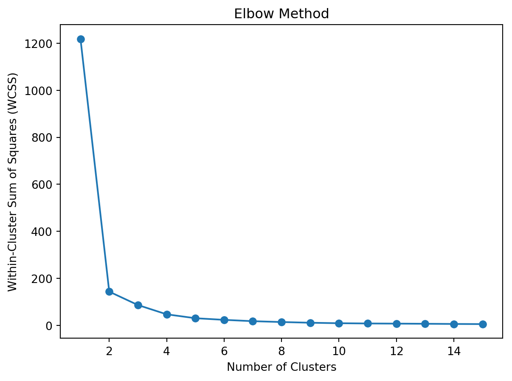
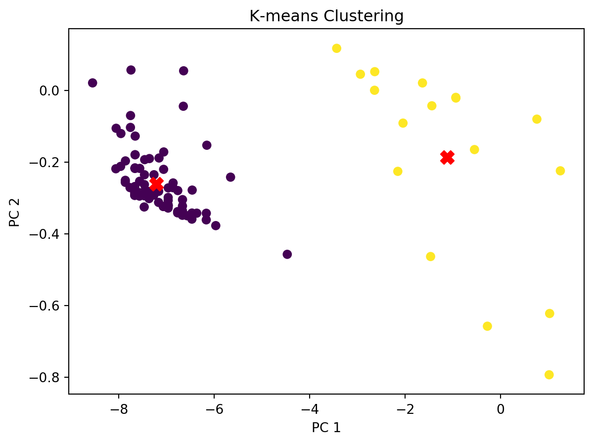
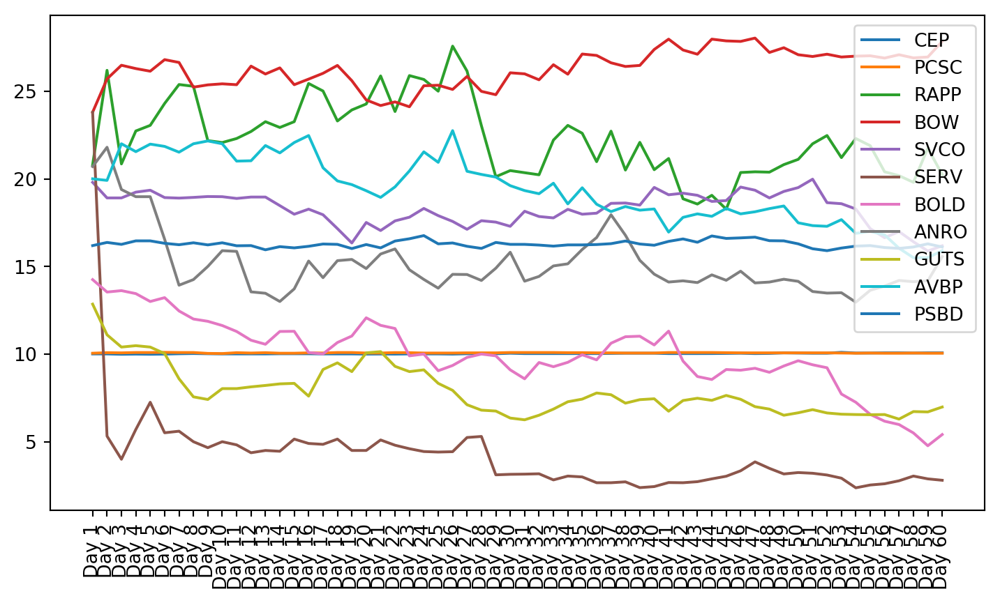

This study investigates the prediction of the stock price of an Initial Public Offering (IPO) shortly after its listing by grouping similar IPOs based on financial data and using time series forecasting techniques. The research utilizes data compiled from IPO Scoop and Yahoo Finance, before applying K-Means clustering based on financial information, industry and time of IPO. A Vector Autoregression (VAR) model is then used to forecast stock performance within each group. Despite the clustering technique used, the results showed that financial data alone did not group IPOs with similar stock market reactions. Additionally, issues with stationarity, autocorrelation and causality in the stock data limited the predictive performance of the VAR model. Future research opportunities include expanding the amount of data observed, exploring advanced stationarizing methods, and investigating alternative machine learning models for improved IPO prediction accuracy.
Introduction
The stock market is an amazing resource for those wishing to make money. In fact, as much as $300 billion changes hands on the stock market every day (nasdaqtrader.com). With the rise of machine learning and artificial intelligence, much research has been done to predict these markets. Someone in possession of an accurate prediction method could make untold amounts of money by knowing when to buy and sell. There are approximately 8,000 stocks eligible for trading in the US stock market (NYSE). Before a stock can be publically traded on the stock market, it must go through a process called an Initial Public Offering, or IPO (Fernando, 2024). The time when a company first releases shares to the public is a time of extreme volatility and therefore a time when large profit can be made. This study attempts to predict the stock performance of an IPO by grouping it with similar IPOs and performing a forecast.
This study collects datasets of IPO financials and stock data. The data is then clustered and grouped for analysis. A multivariate autoregressive model is used to make predictions on the stocks in a group based on the time series of their prices. The results and implications will be fully explored.
Methods
To begin, data was collected for the grouping and forecasting. The first dataset is from IPO Scoop. It includes a company name, the company’s symbol, the industry that company is in, the date that stock was first offered publicly, the number of shares offered, how much it cost when it was offered, the market cap of the company, its revenue and its net income. Each of those data points were standardized using Scikit-Learn’s Standard Scaler, which transforms the data to have a mean of 0 and a standard deviation of 1 (scikit-learn.org, 2024, StandardScaler).
A second dataset was collected through Yahoo Finance. This data consisted of the first 60 day candles of the IPO’s public response. This data included the open, high, low and close price, as well as the volume of shares traded on that day.
Once those datasets were collected, the grouping of similar stocks was performed. The primary method of grouping IPOs together for this study was K-Means clustering. This was done using the financial information dataset. The data was clustered into two groups. The data was again grouped by industry where all those stocks from the same industry were put in a group. It was also grouped by month of IPO, where all stocks that launched in the same month were put in a group.
Finally, time series analysis was performed to make a forecast from the stock data of the stocks in a given group. This was done using Vector Autoregression (or VAR). The first 55 days of stock performance for a group of stocks were used to fit a VAR model. Day 60 was the target for prediction. This was tested on the clusters created by K-Means Clustering, the groups created by industry and the groups created by month of IPO.
Results
When the data was clustered there were a lot of outliers when visualizing them based on two principal components. The first principal component was primarily based on the number of shares of the company. The second was based on the remaining data points with a roughly even split.
Code
from analysis.clustering_util import*x, _ = getData()x, pca = addPCA(x)for i inrange(len(pca.components_)):print(f"Component {i+1}", pca.components_[i])print("\tExplained Variance:", pca.explained_variance_ratio_[i])# plot the iposplt.scatter(x['pc1'], x['pc2'], cmap='viridis')plt.title('Visualize IPOs')plt.xlabel('PC 1')plt.ylabel('PC 2')plt.show()
Once the outliers were removed it was necessary to determine how many clusters the K-Means algorithm should create. The K-Means algorithm requires a set number of groups before performing a clustering (scikit-learn, 2019, K-Means). An elbow plot was created, and it was shown that the ideal number of clusters was 2. Then the K-Means algorithm was run and the two clusters were created.
Code
from analysis.clustering_util import*x, _ = getData()x, _ = addPCA(x)x = removeOutliers(x)# Calculate WCSS for different number of clusterswcss = []for i inrange(1, 16): kmeans = KMeans(n_clusters=i, random_state=42) kmeans.fit(x) wcss.append(kmeans.inertia_)# show the elbow plotplt.plot(range(1, 16), wcss, marker='o')plt.title('Elbow Method')plt.xlabel('Number of Clusters')plt.ylabel('Within-Cluster Sum of Squares (WCSS)')plt.show()

Code
from analysis.clustering_util import*x, s = getData(includeClusters=False)x, pca = addPCA(x)x["symbol"] = sx = removeOutliers(x)y = x[["pc1", "pc2", "symbol"]]x.drop(columns=["pc1", "pc2", "symbol"], inplace=True)# Create KMeans instance with 2 clusterskmeans = KMeans(n_clusters=2)kmeans.fit(x)# Get the cluster labelscentroids = pca.transform(kmeans.cluster_centers_) # scale to same as componentsx['Cluster'] = kmeans.labels_for c in y.columns: x[c] = y[c]old, s = getData(includeClusters=True)old["symbol"] = sold = old[old["symbol"].isin(x['symbol'])]x["Industry_Cluster"] = old["Industry_Cluster"]x["Month_Cluster"] = old["Month_Cluster"]# Plot the centroidsplt.scatter(x['pc1'], x['pc2'], c=x['Cluster'], cmap='viridis')plt.scatter(centroids[:, 0], centroids[:, 1], s=100, c='red', marker='X')plt.title('K-means Clustering')plt.xlabel('PC 1')plt.ylabel('PC 2')plt.show()

The groups from the clustered data were log transformed and tested for stationarity using the Augmented Dickey-Fuller test and the KPSS test. The data is also tested for autocorrelation using the Durbin-Watson test and for causality with the Granger Causality test.
Show Results of Stationarity and Correlation Tests
Code
from prediction.prediction_util import*stocks = pd.read_csv("data-collection/stocks.csv", header=[0,1], index_col=[0])ipos = pd.read_csv("analysis/clustered.csv")group1 = ipos[ipos["Cluster"] ==1]close = stocks.xs('Close', axis=1, level=1)close.index = stocks.indexg1StockData = getGroupClosingPrices(group1, close)for c in g1StockData.columns:# p = PowerTransformer(method='box-cox')# g1StockData[c] = p.fit_transform(g1StockData[[c]])# lambdas[c] = p g1StockData[c] = g1StockData[c].apply(lambda x: np.log(x) if x !=0else0)# g1StockData[c] = g1StockData[c].diff()# g1StockData[c].dropna(inplace=True) ts, p, lags = adf_test(g1StockData[c].dropna()) tsK, pK, lagsK = kpss_test(g1StockData[c].dropna()) db = durbinWatson_test(g1StockData[c].dropna())print(c)print(f"Test Statistic: ADF: {round(ts, 5)}\t KPSS: {round(tsK, 5)}")print(f"P-Value: ADF: {round(p, 5)}\t KPSS: {round(pK, 5)}")print("DurbinWatson: %.5f"% db) others = [x for x in g1StockData.columns if x != c] gc = {}print("Granger Causality Tests")for x in others: gc[x] =min(granger_test(g1StockData[c], g1StockData[x]).values())print(x, gc[x])if p >0.05and pK <0.05: g1StockData.drop(columns=c, inplace=True)print()
plt.figure(figsize=(9, 4.8))for c in g1StockData.columns: plt.plot(g1StockData.index, g1StockData[c].apply(lambda x: np.exp(x) if x !=0else0), label=c)plt.legend()plt.xticks(rotation=90)plt.show()

Once the clusters were created, the stocks from that cluster were given to the VAR model. The small cluster was analyzed.
Code
from statsmodels.tools.sm_exceptions import ValueWarningfrom prediction.prediction_util import*from statsmodels.tsa.api import VARimport matplotlib.pyplot as pltfrom sklearn.metrics import mean_absolute_error, mean_squared_errorimport warningswarnings.filterwarnings('ignore', category=ValueWarning)stocks = pd.read_csv("data-collection/stocks.csv", header=[0,1], index_col=[0])ipos = pd.read_csv("analysis/clustered.csv")group1 = ipos[ipos["Cluster"] ==1]close = stocks.xs('Close', axis=1, level=1)close.index = stocks.indexg1StockData = getGroupClosingPrices(group1, close)for c in g1StockData.columns:# p = PowerTransformer(method='box-cox')# g1StockData[c] = p.fit_transform(g1StockData[[c]])# lambdas[c] = p g1StockData[c] = g1StockData[c].apply(lambda x: np.log(x) if x !=0else0)# g1StockData[c] = g1StockData[c].diff()# g1StockData[c].dropna(inplace=True) ts, p, lags = adf_test(g1StockData[c].dropna()) tsK, pK, lagsK = kpss_test(g1StockData[c].dropna()) db = durbinWatson_test(g1StockData[c].dropna())if p >0.05and pK <0.05: g1StockData.drop(columns=c, inplace=True)date_labels = pd.date_range(start='2024-01-01', periods=60, freq='D')g1StockData["date"] = date_labelsg1StockData.set_index("date", inplace=True)model = VAR(g1StockData.iloc[:-5])results = model.fit(maxlags=1, ic='aic')lag_order = results.k_arforecast_input = g1StockData.values[-(lag_order):]forecast = results.forecast(y=forecast_input, steps=5)forecast_df = pd.DataFrame(forecast, index=[f"Day {i}"for i inrange(56, 61)], columns=g1StockData.columns)g1StockData.index = [f"Day {i}"for i inrange(1, 61)]for c in forecast_df.columns: g1StockData[c] = g1StockData[c].apply(lambda x: np.exp(x) if x !=0else0) forecast_df[c] = forecast_df[c].apply(lambda x: np.exp(x) if x !=0else0)plt.figure(figsize=(9, 4.8))for i, c inenumerate(g1StockData.columns): plt.plot(g1StockData.iloc[:-5].index, g1StockData[c].iloc[:-5], label=c)for i, c inenumerate(g1StockData.columns): plt.plot(forecast_df.index, list(forecast_df.iloc[:, i]), color=plt.gca().lines[i].get_color(), label=None)plt.legend(loc='upper left')plt.xticks(rotation=90)plt.show()correct = g1StockData.iloc[-1]pred = forecast_df.iloc[-1]prev = g1StockData.iloc[-2]error =abs(correct - pred)errorPct = error / correct *100results = pd.DataFrame({"correct":correct, "pred":pred, "prev":prev, "errorPct":errorPct, "error":error})print(results)# Calculate MAEmae = mean_absolute_error(results['correct'], results['pred'])print('Mean Absolute Error:', mae)# Calculate MSEmse = mean_squared_error(results['correct'], results['pred'])print('Mean Squared Error:', mse)count =0errorPct = []for i inrange(len(correct)):if correct.iloc[i] < prev.iloc[i] and pred.iloc[i] < prev.iloc[i]: count +=1if correct.iloc[i] > prev.iloc[i] and pred.iloc[i] > prev.iloc[i]: count +=1 errorPct.append(abs(correct.iloc[i] - pred.iloc[i]) / correct.iloc[i] *100)print("Percent Directionally Correct:", count /len(correct), f"({count}/{len(correct)})")print("MAE of Percent Error:", sum(results["errorPct"]) /len(results))
correct pred prev errorPct error
TDTH 2.31 2.447354 2.67 5.946045 0.137354
PTHL 4.54 4.597355 4.43 1.263325 0.057355
PMAX 3.11 3.045296 3.11 2.080501 0.064704
Mean Absolute Error: 0.08647072096142298
Mean Squared Error: 0.008780721725094942
Percent Directionally Correct: 0.6666666666666666 (2/3)
MAE of Percent Error: 3.0966236783192778
IPO MONTH: November
TZUP
Test Statistic: ADF: -3.2689 KPSS: 0.08704
P-Value: ADF: 0.07153 KPSS: 0.1
DurbinWatson: 2.16014
Granger Causality Tests
Insufficient number of symbols after preprocessing
IPO MONTH: December
ADUR
Test Statistic: ADF: -3.91058 KPSS: 0.13632
P-Value: ADF: 0.01173 KPSS: 0.06792
DurbinWatson: 1.82832
Granger Causality Tests
Insufficient number of symbols after preprocessing
Discussion
This study was based on the assumption that IPOs with similar financial data would have similar stock performance. The results show us that this was not the case. However, there are more fundamental problem than that with the results of the study.
First it can be seen in the graphs that K-Means clustering based on financial data did not provide groups of stocks with similar stock market performance. The K-Means clustering algorithm is very powerful and a common choice for clustering applications (Fang and Chiao, 2021). Its goal is to make the differences between items in a cluster as low as is possible (Fang and Chiao, 2021). Since the financial data was not enough to predict market reaction to the IPO, more data is needed to be able to group IPOs by performance. However, since the K-Means clusters performed better than grouping by industry and by month of launch, there is a possibility that more advanced methods of clustering, combined with additional data could yield useful results.
Besides the shortcomings of clustering by financial data, there are problems with the time series themselves. As can be seen in the results of the Augmented Dickey-Fuller test and the KPSS test, much of the data is not stationary. The Augmented Dickey-Fuller test was conducted using Statsmodel’s implementation. This test is used to check for the presence of a unit root in a data series (Statsmodels, 2010, ADFuller). The test run in this study uses the null hypothesis that there is a unit root and is one of the most prominent tests of stationarity (Acharya, 2024). P-Values that are not significant (the level of significance used in this study is 0.05) indicate that the test “cannot reject that there is a unit root” (Statsmodels, 2010, ADFuller). Should there be no unit root, the data can be said to be stationary under the Augmented Dickey Fuller test (Jacob and Littleflower, 2022).
The KPSS test, or Kwiatkowski-Phillips-Schmidt-Shin test, was also used to test for stationarity. This test is similar to Augmented Dickey-Fuller, but it reverses the null, testing instead with a null hypothesis that the data is stationary (Statsmodels, 2009, KPSS). If the values are significant, the data can be said stationary under the KPSS test. This is considered by some to be the best test of stationarity for univariate time-series (Miller and Wang, 2016).
Both these tests showed that not all of the data is stationary, even after using a log transformation. Stationarity is required for VAR to work properly. This can be seen in the plots of the stock charts. The plot of the data after stationarizing the data shows many of the plots are not oscillating about the mean. Instead, they still have trend, and they do not trend all in the same direction.
In addition to this, the data does not exhibit strong autocorrelation. This means that past stock market values do not have a significant correlation to future values. This can be seen in the Durbin-Watson test results. The Durbin-Watson test implementation used was from statsmodels and tests the null hypothesis that there is “no serial correlation in the residuals” (Statsmodels, 2024, Durbin-Watson) or that there is not correlation between the previous observation and the present (Refenes and Holt, 2001). It is important to note that the Durbin-Watson test only checks a lag of 1 observation in the past (Refenes and Holt, 2001). However, this is usually not a problem for analysis as series with autocorrelation typically have the strongest correlation with the immediately preceding observation (Refenes and Holt, 2001). When there is no in a series autocorrelation, the Durbin-Watson test statistic equals 2 (Statsmodels, 2024, Durbin-Watson). To determine what value implies that autocorrelation exists, a Durbin-Watson table must be used. For this study, with a significance level of 0.05, and 60 values in the test, the corresponding dL and dU values are 1.55 and 1.62 respectively (Bobbit, 2019). This means the range from 1.62 to 2.38 means there is no evidence of autocorrelation and the range from 1.55-1.62 and 2.38-2.45 means the evidence is inconclusive (Brooks, 2019). Given this range and knowing that values outside 1.55-2.45 have significant autocorrelation, it is clear that there is not strong autocorrelation in many of the time series.
In addition to autocorrelation, causality was tested using the Granger Causality test. Granger Causality looks at lags in one time series as a predictor of another. More specifically, given series X and Y, X Granger causes Y if Y can be better predicted using X and Y than Y alone (Folfas, 2016). When conducting a Granger Causality test using the Statsmodels implementation, the null hypothesis is that x2 does not Granger Cause x1 (Statsmodels, 2024, GrangerCausalityTest). In this study, x1 was the data is shown so that x2 was the column specified and x1 was any of the other columns in the data. A p-value less than 0.05 as specified in this study would mean that the given stock Granger causes the other stock listed (Statsmodels, 2024, GrangerCausalityTest). The results of the Granger Causality test on the data show the best possible Granger Causality Test result. This shows that although there are some time series that Granger Cause each other, the majority of them do not. It is important to note that the Granger Causality test assumes that the two time series being analyzed are stationary (Folfas, 2016). If they are not, the Granger Causality test will not provide accurate results (Folfas, 2016). Since some of the time series are not stationary, some of the results are brought into question.
Once those tests had been performed, Vector Autoregression modeling was conducted. Vector Autoregression, or VAR, is “an n-equation, n-variable linear model in which each variable is in turn explained by its own lagged values, plus current and past values of the remaining n - 1 variables” (Stock and Watson, 2001). Developed with observation of macroeconomic trends in mind, VAR is a great tool for observing interrelated time series (Stock and Watson, 2001). VAR is often used as a benchmark for comparing against other modeling tools (Stokc and Watson, 2001). For VAR results to be most accurate, it is necessary to only include stationary data (Han, Lu, and Liu, 2015). Additionally, VAR works by exploiting the causation between lagged values of the various series (Stock and Watson, 2001). Since the data used in this study was not all stationary, and there was not a strong causal relationship between a stock and other stocks or even between a stock and its own past values, VAR did not produce very accurate results.
In the results for the K-Means cluster, it is clear that Mean Absolute Error and Mean Squared Error do not represent the whole of the test very well. There are 3 significant outliers that skew the results. Another reason they are not a good representation of the results is that the data is not normalized. This allows the numerically large error values to drown out the numerically small error values. It was decided to leave the data unnormalized so that the results would be more easily interpretable. The implementation used was provided by Scikit Learn and used the raw values. The MAE was recalculated using the formula given below to find the Mean Absolute Error of the percentage difference between the prediction and the correct value. This is also very skewed but also provides a more helpful metric than a dollar value.
Mean Absolute Error as Percentage Formula: \[
\text{MAE} = \frac{1}{n} \sum_{i=1}^{n} (\frac{| \text{correct}_i - \text{pred}_i |}{\text{correct}_i} \times 100)
\]
Additionally, as an example business use case, the percent of predictions that were directionally correct was calculated. If the data predictions were very accurate, the percentage of predictions that the model correctly found were above or below the 55th day would allow a trading institution to make investment decisions based on the predicted direction 5 days in the future.
Opportunities for Future Research
The problem with this study revolved around the fact that much of the data was not stationary or not predictive. The most beneficial step in terms of model accuracy would be to expand the window of stock market data that is viewed and given to the model before prediction. This would presumably allow data to become more stationary and more autocorrelated as investors become familiar with the stock and take advantage of shocks to bring the data back to a central mean. This would also allow the VAR model to use more data to find relationships between time series, which would benefit its accuracy as well.
Additional effort should also be put into stationarizing the data. In this study, log transformations were used on the data before assessment and model fitting. During research differencing was tested but it was ineffective compared to log transformations. Log transformations combined with differencing was also researched but this also was less effective than log transformations. If a method of stationarization could be found that would be effective given the constraints of short time series and the fact that IPOs are very volatile, it would improve the results of the modeling.
While there is not much that can be done to improve the autocorrelation of the data, different methods of grouping could improve the Granger Causality between the time series. Ideally, even in series that were not autocorrelated, there may exist stocks such that shocks in one stock imply movements in the price of other stocks. A place this may be found in stocks that are not IPOs could be stocks that are in common high value ETFs or part of major market indexes. Thus, a drop in one of the stocks may cause many fund managers to rebalance their portfolios and the other stocks in those portfolios would fluctuate accordingly. A method for finding that relationship in IPOs during their first months of trading would be invaluable for modeling purposes.
Given the restrictions of the data found in this study, other modeling methods may be more appropriate. Recurrent Neural Networks (RNNs) are commonly accepted as the most accurate method for time series analysis (Li et al., 2019). Long and Short Term Memory Unit (LSTM) models are one of the most reliable types of RNNs. They use an RNNs network of connected nodes modeling behavior with the ability to remember and forget (Li et al., 2019).
Another option for machine learning applied to IPO forecasting could be Gradient Boosting. Gradient Boosting uses regression trees that are combined and weighted to find a final prediction (Brownlee, 2018). Its use of memory as a supervised regression algorithm makes it a good choice for time series (Qinghe et al., 2022).
Finally, it was determined experimentally that clustering IPOs based on financial data did not yield time series that were very similar shortly after launch. More research should be done on what makes stocks act similarly after launch that would allow them to be clustered.
Conclusion
In conclusion, this study explored IPO stock data shortly after going public. IPOs were clusted together based on their financial data, as well as grouped according to industry and month of IPO. It was found that those methods of grouping were not sufficient to gather stocks with a strong correlation relationship necessary for statistical modeling and prediction. The reasons for this were explored. Opportunities for future research of applying machine learning to IPO prediction were discussed. The prediction of IPOs is a valuable area of study due to its applicability to science-based stock trading.
References
Acharya, D. (2024). Comparative Analysis of Stock Bubble in S&P 500 Individual Stocks: A Study Using SADF and GSADF Models. Journal of Risk and Financial Management, 17(2), 59. https://doi.org/10.3390/jrfm17020059
Bobbit, Z. (2019, January 4). Durbin-Watson Table. Statology. https://www.statology.org/durbin-watson-table/
Brooks, C. (2019). Introductory Econometrics for Finance (4th ed.). Cambridge University Press.
Daily Market Summary. (n.d.). Www.nasdaqtrader.com. Retrieved December 9, 2024, from https://www.nasdaqtrader.com/Trader.aspx?id=DailyMarketSummary
Fang, Z., & Chiao, C. (2021). Research on prediction and recommendation of financial stocks based on K-means clustering algorithm optimization. Journal of Computational Methods in Sciences and Engineering, 21(5), 1081–1089. https://doi.org/10.3233/jcm-204716
Fernando, J. (2024). Initial Public Offering (IPO): What It Is and How It Works. Investopedia. https://www.investopedia.com/terms/i/ipo.asp
Folfas, P. (2016). Co-movements of NAFTA stock markets: Granger‑causality analysis. Economics and Business Review, 2 (16)(1), 53–65. https://doi.org/10.18559/ebr.2016.1.4
For the first time in our history, NYSE will trade all 8,000 securities listed on all U.S stock exchanges, including exchange traded funds. (n.d.). Www.nyse.com. Retrieved December 9, 2024, from https://www.nyse.com/network/article/nyse-tapes-b-and-c
Han, F., Lu, H., & Liu, H. (2015). A Direct Estimation of High Dimensional Stationary Vector Autoregressions. Journal of Machine Learning Research, 16(16), 3115–3150. https://jmlr.csail.mit.edu/papers/volume16/han15a/han15a.pdf
Jacob, T., & Littleflower, J. P. (2022). Cointegration and stock market interdependence: Evidence from India and selected Asian and African stock markets. Theoretical and Applied Economics, XXIX(4), 133–146. https://doaj.org/article/cdd5d4da6cb64285a26af2e527de45af
Jason Brownlee. (2018, November 20). A Gentle Introduction to the Gradient Boosting Algorithm for Machine Learning. Machine Learning Mastery. https://machinelearningmastery.com/gentle-introduction-gradient-boosting-algorithm-machine-learning/
Li, Y., Zhu, Z., Kong, D., Han, H., & Zhao, Y. (2019). EA-LSTM: Evolutionary attention-based LSTM for time series prediction. Knowledge-Based Systems, 181, 104785. https://doi.org/10.1016/j.knosys.2019.05.028
Miller, J. I., & Wang, X. (2016). Implementing Residual-Based KPSS Tests for Cointegration with Data Subject to Temporal Aggregation and Mixed Sampling Frequencies. Journal of Time Series Analysis, 37(6), 810–824. https://doi.org/10.1111/jtsa.12188
Qinghe, Z., Wen, X., Boyan, H., Jong, W., & Junlong, F. (2022). Optimised extreme gradient boosting model for short term electric load demand forecasting of regional grid system. Scientific Reports, 12(1). https://doi.org/10.1038/s41598-022-22024-3
Refenes, A.-P. .N., & Holt, W. T. (2001). Forecasting volatility with neural regression: A contribution to model adequacy. IEEE Transactions on Neural Networks, 12(4), 850–864. https://doi.org/10.1109/72.935095